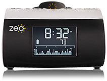
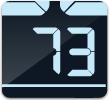
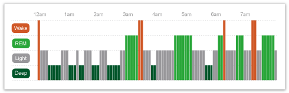
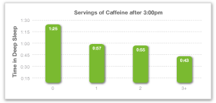
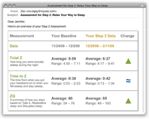
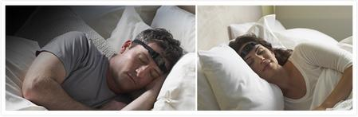
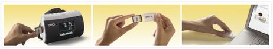
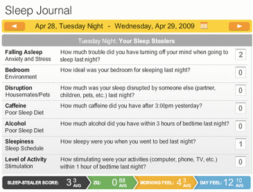
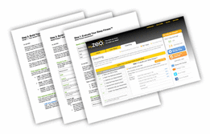
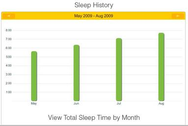

<div class='learn-content'>
  <div class='vtabs-wrapper'>
    <ul class='vtabs-controller'>
      <li>
        <a class='selected' href='#overview'>Overview</a>
      </li>
      <li>
        <a href='#how'>How to use it</a>
      </li>
      <li>
        <a href='#stories'>User Stories</a>
      </li>
    </ul>
    <div class='vtabs-content'>
      <div class='vtabs-content-top'></div>
      <div class='vtabs-content-item active' id='overview'>
        <h3>Zeo is a revolutionary sleep device.</h3>
        
        <p style='margin-top:30px'>The first and only affordable sleep device capable of monitoring brain-waves, the Zeo is designed to help you analyze and improve your sleep. It’s composed of a lightweight wireless headband, a bedside display, a set of online analytical tools, and an email-based personalized coaching program.</p>
        <div class='clear'></div>
        <hr />
        <h3>Track your ZQ</h3>
        
        <p>
          Your ZQ is a daily sleep quality rating. The ZQ formula is based on extensive scientific testing, and takes into account a variety of factors including how long and how deeply you've slept. If you can measure it, you can improve it.
        </p>
        <div class='clear'></div>
        <hr />
        <h3>Visualize your sleep with personalized sleep graphs.</h3>
        <p>Using Zeo’s included web-based tools, you can easily see exactly how — or whether — you slept through the night.</p>
        
        <hr />
        <h3>Find out what’s stealing your sleep.</h3>
        
        <p>Understand and minimize the factors that negatively affect sleep, so you can take control of your nights. Use the visual analytical tools in your personal myZeo.com account to see trends and cause & effect patterns.</p>
        <div class='clear'></div>
        <hr />
        <h3>Get personalized coaching.</h3>
        
        <p>Sign up for the 7 Step Sleep Fitness™ Program to receive recommendations and actions plans tailored to you and your sleep. Zeo will help you get the most from your sleep, so you can be your best.</p>
      </div>
      <div class='vtabs-content-item' id='how'>
        <h3>Step 1: Wear the Zeo Headband</h3>
        
        <p>You begin by wearing the Zeo Headband each night. The headband uses our patent-pending SoftWave™ sensor technology to accurately and safely measure your unique sleep patterns through the electrical signals naturally produced by the brain. As you pass through different levels of sleep – lighter to deeper and back again – the Zeo Headband tracks how you are sleeping.</p>
        <h3>Step 2: Review Your Sleep Data on the Bedside Display</h3>
        
        <p>Your personal sleep discovery doesn't stop with the bedside display! The Zeo Bedside Display allows you to store your sleep information on an SD memory card (like the memory cards used with digital cameras). With your SD card and its USB adapter, you can easily upload all of your sleep information to the myZeo Personal Coaching website, and begin to spot trends in your sleep that you have never been able to see before.</p>
        
        <h4 style='margin-top:10px'>Sleep Journal</h4>
        <p>Uncover the links between how you live – including exercise, diet, stress, and environment – and how you sleep. Available both online and on paper, your Zeo Sleep Journal allows you to record lifestyle, environmental, and consumption factors that can disrupt your sleep. You'll learn about the 7 Sleep Stealers™ and how much they can affect your sleep data each night. You can also define your own lifestyle factors to record. The more sleep stealers you track, the more insights you'll find about how your actions may be affecting your Sleep Fitness.</p>
        <h4>Sleep Tools</h4>
        <p>Using Zeo's online tools, you can begin to understand how your ZQ and morning feel scores change from night to night. You'll also spot any connections between your daily lifestyle choices and your nightly sleep and find out for yourself some of the cause and effect patterns in your sleep.</p>
        <h3>Step 4: Start Your 7 Step Sleep Fitness™ Program, Your Personal Guide to a Better Night's Sleep</h3>
        
        <p>The 7 Step Sleep Fitness Program is a guided self-discovery process for your sleep. This personalized sleep coaching program asks you to set goals for your sleep and then provides you with customized strategies to help you to achieve these goals. In addition, you can learn more about the latest sleep research, and receive recommendations on how to track the items that are most beneficial for you. Through this program, you'll experience the power of seeing your own sleep data and learn about which factors may be affecting your sleep. You will have full control over the program to skip, repeat or start-over any step you wish. Special features of the program include:</p>
        <ul>
          <li>A series of personalized e-mails that incorporate effective sleep tips and advice, customized to your sleep data, lifestyle and goals.</li>
          <li>A customized action plan to deal with each of the 7 Sleep Stealers as they relate to you and your sleep.</li>
          <li>Goal-oriented assignments that are realistic and achievable, and will not require you to drastically rearrange your lifestyle or even your sleep style.</li>
          <li>Positive, supportive, and easy to understand suggestions and exercises, in everyday language that is easy to follow.</li>
          <li>The Zeo Sleep Information Center is an online library for sleep information and science. In addition to offering another kind of self-guided, personal coaching tool, you can use the Sleep Information Center to discover what sleep is, and why it’s important.</li>
        </ul>
      </div>
      <div class='vtabs-content-item' id='stories'>
        <h3>User Stories</h3>
        <table>
          <tr>
            <td>
              
            </td>
            <td>
              <h4>Mom On the Go</h4>
              <p>
                <em>Kathy W, 32, San Francisco –</em>
                <span class='gris'>
                  "I found the sleep coaching to be the final piece to the puzzle. It was really fascinating to understand what kinds of things were affecting my sleep without even realizing it..."
                  <br />
                  <span class='shownext'>Read Story</span>
                </span>
              </p>
              <div class='story' style='display: none'>
                <h4>Life before Zeo</h4>
                <p>Before the baby, whenever I was stressed out and working a lot, I couldn’t get out of bed in the mornings.  Then when I had my daughter, it seemed my sleep schedule and the way I felt were completely out of my control.  In the mornings, I had to hit snooze a lot.  I was exhausted when I woke up for the day and I never had the energy to exercise in the morning.  Those mornings I hit snooze, I felt like I needed extra coffee, and because I wasn’t very physically active, both my brain and body were sluggish. I could definitely feel an impact from not sleeping well.  It made me want an understanding of my sleep and what I could do to improve things.</p>
                <h4>Doubts and Fears</h4>
                <p>I have really long hair and I thought the headband would get tangled up and it would be a real pain and hard to get used to.  When my Zeo arrived and I put on the headband, my husband kept calling me “Wonder Woman” because he thought it was so funny.  But I found the headband was much more comfortable than I expected and after a night or two of sleeping with it, it really didn’t bother me.  And after a couple days my husband got really jealous of my Zeo because he wanted to know what his sleep score was!</p>
                <h4>The Zeo Experience</h4>
                <p>Zeo was dramatic!  There is such a difference on those mornings when I woke up with SmartWake versus just a normal alarm.  Even on the mornings when I had to be up several times with the baby, I was still able to wake up and feel better than if I had a normal alarm clock and just hit a snooze button. I definitely feel more rested and fresher and even have the energy to workout!</p>
                <p>I found the sleep coaching to be the final piece to the puzzle. It was really fascinating to understand what kinds of things were affecting my sleep without even realizing it. The sleep coaching also made me consciously say, “Oh, I should go to bed a little earlier,” or, “I should maybe not stay up late and watch TV.  I should just go to bed.”  And that was good.  I got more REM and Deep sleep over the course of using Zeo coaching and it was nice to see that over time my sleep was definitely improving by making such seemingly small changes.</p>
                <h4>How have things improved</h4>
                <p>Improving the way you wake up in the morning makes such a big difference in your entire day. You have a better, calmer outlook on the day when you wake up in a pleasant manner.</p>
                <p>I actually love the morning.  Being able to get up at the right point in my sleep cycle maximizes them.  It makes me feel like I have all this extra time and I actually get things done or spend extra time with the baby before I leave for work. I’m able to approach all those stressful situations better, and handle them with a lot more ease.  That kind of morning is wonderful.</p>
                <p>I would definitely recommend Zeo for better mornings as well for the learning and the ability to self-correct bad sleep patterns. Because of Zeo, even though the baby is waking me up, I can still wake up refreshed and feel good in the morning.</p>
              </div>
            </td>
          </tr>
          <tr>
            <td>
              
            </td>
            <td>
              <h4>Mother May I?</h4>
              <p>
                <em>Valerie R., Waltham, MA –</em>
                <span class='gris'>
                  "For new moms, sleep is always an issue. It’s a huge issue and it’s not just about you. It’s about your whole family, and if you work it’s about your work performance...  It really makes a difference on people’s health and outlook and ability to function."
                  <br />
                  <span class='shownext'>Read Story</span>
                </span>
              </p>
              <div class='story' style='display:none'>
                <h4>Life before Zeo</h4>
                <p>For new moms, sleep is always an issue. It’s a huge issue and it’s not just about you. It’s about your whole family, and if you work it’s about your work performance, I mean it really sort of dominoes to everything.  It really makes a difference on people’s health and outlook and ability to function.</p>
                <p>I don’t think I was necessarily a bad sleeper but I don’t think I paid the sort of attention to it or really viewed it as something I had the ability to control or to do something about.  You’re just so busy and there’s always something going on and there’s always something else to be done and if something has to give it tends to be your sleep. So you make accommodations around your sleep and then you pay for it later.</p>
                <p>I had a tendency to do things before I went to sleep that may be more stimulating. I had a tendency to use that time to worry and to think through things and to try to think ahead. This state of thinking and wondering will keep you from sleeping.</p>
                <p>[Some people can get by without much sleep]. I’ve never been that kind of person. I don’t think clearly. I can’t focus on things. I don’t feel good even physically. I just have a hard time getting through a regular day without a certain amount of sleep. And it was affecting everything… from how I physically felt to how I got along with my family, to how much patience I had. There’s a lot going on around a new baby and it’s just, it was really trying for me.</p>
                <h4>Doubts & Fears</h4>
                <p>I don’t know if I expected it would help me. I hoped that it might be able to help me. But before I started using Zeo I didn’t really have a good expectation of what would happen. I hoped that it would be able to help me but I had tried other things in the past and found them not to be necessarily helpful.</p>
                <p>I was a little bit skeptical and until I actually started using Zeo and seeing how you get the data and getting the emails and sort of participating in the process, I don’t think I was really able to see what value there could be.</p>
                <h4>The Zeo Experience</h4>
                <p>I started using Zeo when I was on maternity leave with my second child, my daughter Grace.  To me it was even more important to try to control as many of the things affecting my sleep as possible because you can’t control an infant. You want to make sure that what sleep you get is the best sleep possible - that you’re not wasting any of the time that you could be sleeping and that you’re not missing out on better quality sleep.</p>
                <p>Zeo definitely motivates you to make the changes you need. And I think that the proof was in the pudding.  Once I started to try certain things, and saw that my score actually did change, that motivated me to pay more attention to the coaching emails.</p>
                <p>If you had asked me before Zeo, I would have said caffeine doesn’t bother me from sleeping because I am accustomed to it.  But its funny, the coaching program talks about food and drink and what you shouldn’t have before bed.  And actually it did make a small difference if I had coffee later in the day. Subjectively it didn’t feel like it did, but it’s interesting to see that caffeine really did have an effect.</p>
                <p>One thing that I most enjoyed and continue to use is what Zeo calls the “power down hour,” taking a block of time before you go to sleep to really relax and mentally wind down.  With small children, once they’re asleep, there’s a temptation to think, “this is the perfect time for me to go downstairs to pay some bills and clean the kitchen.” It’s possible to do that but you can actually see what it costs you in terms of the quality and quantity of your sleep to make that kind of a decision.  And for me, being able to see a real sort of result makes it easier for me to say, “I’m not going to do that.”</p>
                <p>I think Zeo catches you.  It’s almost like if you’re on a diet and you slide from your good habits and then you step on the scale and see that you’ve gained weight.  You can easily not do the things you know you ought to be doing in order to sleep well, but then when you see your ZQ score drop, it motivates you to put yourself back on to the plan.</p>
                <p>Even my husband has changed due to my Zeo.  In the morning, when we’d wake up, my husband would say, “what did you get?” And if I said, “oh, I got a 60 or a 65,” he said, “oh, that’s great.” But if I said I got a 42, he’d say, “today I’ll take [the baby] downstairs and let you get more sleep.” Because of Zeo, there was an actual quantitative number that I could point to instead of just saying “I feel tired,” and sound as if I was moaning and groaning about it.</p>
                <h4>Life After Zeo</h4>
                <p>I think that Zeo has changed my life in that it has helped me to actually sleep better and make clear to me that I can have some effect on the quantity and quality of my sleep, even with a small child.</p>
                <p>They say: “that’s what happens, you have a baby and you don’t sleep.” The temptation is to throw up your hands and say, “well in three years I’ll sleep again.” But realistically, there are some things that you can do that have an affect and that was a big deal for Zeo to help me to feel there was something I could do.</p>
                <p>Zeo would be an excellent tool for a new mother just because they are concerned about a lack of sleep and it’s effect on their relationship with their new baby.  There’s so much stress at that point of your life, that to get a good night sleep really is an important thing and Zeo is a tool that you can really maximize the sleep that you’re going to be able to get. You’re still going to have sleepless nights and things you can’t do anything about because of your baby, but what you can control, it can help you to control. And that’s huge.</p>
                <p>I do think I’m a better mother because of Zeo.   Because I’m not as sleep deprived, I’m really able to enjoy my baby. I love it.</p>
              </div>
            </td>
          </tr>
          <tr>
            <td>
              
            </td>
            <td>
              <h4>Tired &amp; Retired</h4>
              <p>
                <em>Barbara P, Helena, MT –</em>
                <span class='gris'>
                  "I was not a good sleeper.  I was sleeping six hours or less..."
                  <br />
                  <span class='shownext'>Read Story</span>
                </span>
              </p>
              <div class='story' style='display:none'>
                <h4>Life before Zeo</h4>
                <p>I was not a good sleeper.  I was sleeping six hours or less.  I was waking up frequently - I think I would wake up anywhere from a half dozen to a dozen times.  And If it would happen after three o’clock, lots of times I couldn’t go back to sleep.  I lost four hours of sleep those nights.</p>
                <p>During the day I was crabby!  I would constantly have to bite my tongue - keep a lid on it.  I was irritable and tired all the time.   By 10 o’clock AM I was ready to go back for a nap.  I was tired all the time.</p>
                <p>And it was affecting me.  I wasn’t able to remember things.  I didn’t enjoy exercising very much because I was so tired. And I didn’t have enough energy to keep up with my grandkids.</p>
                <h4>Doubts & Fears</h4>
                <p>I understood the alarm and everything, but I didn’t know how much I could improve my sleep.  Every week Zeo gave me various tasks to do [as part of the coaching program] and I didn’t think they really mattered with me.</p>
                <h4>The Zeo Experience</h4>
                <p>The first couple of weeks of owning Zeo, I wasn’t really doing the coaching program.  My daughter said “you know if you want to change and improve, it’s like a diet, you have to be disciplined.” And so I said ok, and I got right on it.  I started doing the [coaching program] and my ZQ score started improving.</p>
                <p>Now, I go to bed between 10:00 and 10:30.  After 9:00 I shut the TV off and the computer off.  I don’t do those things.  If I choose to drink wine or coffee with dinner (which I don’t hardly ever do anymore) I know it’s a choice thing - I know I’m not going to sleep as well.  Once in a while I enjoy that, so I do it.</p>
                <p>I also changed my bedroom around. I got it painted. I took anything out of there that wasn’t meant for sleeping, like piles of things, I had a bunch of books and things like that, or projects, or stuff I was working on.  So that’s all gone out of there.  I also use one of those sleep masks</p>
                <h4>How things have improved</h4>
                
                <p>I have not felt this good in a long, long time.  I feel awake.  I feel rested.  I feel focused. I’m sleeping more!  Instead of sleeping six or less, I am sleeping seven to eight.</p>
                <p>I can’t tell you, I was to the point where I had trouble reading the newspaper, I was so fatigued.  I would read a paragraph, and I wouldn’t remember what I read, so I would try reading it again, maybe I’d read it five times, I mean that’s stupid!  But I have three books going again now. Now I’m able to keep enough focus to have not just one newspaper, but also multiple different plotlines in three different books!</p>
                <p>I think I must be nicer to be around.  I just have this feeling of enthusiasm.  I have energy that I haven’t had in a long time.  When I had to take care of my grandsons, I was just excited to play with those little boys!  But I would say I looked forward to them taking a nap.  I would get tired. I felt like I needed my husband to help me watch them.  But I don’t think that anymore!</p>
                <p>Before I had to force myself to exercise just because I know that it’s the healthy thing to do.  Now I look forward to exercise. I went hiking with my daughter, and we were climbing up 1000 feet, down 400, and then up another whatever.  I didn’t think it was hard, when in the past I would have thought that was work.  I’m doing things easily now before I would have thought was an effort.</p>
                <p>Zeo has improved my sleep a lot, and I feel so much better!  I would recommend it to anybody.  It really bugs me when people complain about their sleep but don’t want to try Zeo because I think it would help them!  I really do!  It was absolutely worth it.</p>
              </div>
            </td>
            <td></td>
          </tr>
          <tr>
            <td>
              
            </td>
            <td>
              <h4>Young &amp; Sleepless</h4>
              <p>
                <em>James T, Langhorne, PA –</em>
                <span class='gris'>
                  "Since high school, I’ve had problems sleeping that were definitely stress-related..."
                  <br />
                  <span class='shownext'>Read Story</span>
                </span>
              </p>
              <div class='story' style='display:none'>
                <h4>Life before Zeo</h4>
                <p>Since high school, I’ve had problems sleeping that were definitely stress-related, where the time going to sleep caused my mind to be racing with what I’d be doing the next day, or the problems I was facing, and I just couldn’t let myself relax and go to sleep.</p>
                <p>I started taking herbal supplements, trying to find a way to get a deeper sleep, and I got into hydroxytryptophan stuff and Kava Root, and it worked for a little while until my body adjusted to them</p>
                <p>As I got older, I was able to go to sleep, but I always felt groggy. I was up in the morning, I just wasn’t really awake.  To fully come out of it, it took me until early afternoon.  And this really wore on me. I would get more and more exhausted over the course of the week and then Saturday would become my crash day where I would sleep twelve, thirteen hours trying to make up for this.</p>
                <h4>Doubts & Fears</h4>
                <p>I didn’t have a sure understanding of exactly what Zeo did or how reputable it was.  Plus it was definitely just a little more than I like to spend on a whim, but I know that there are very few things that you can invest in that you’re going to see a real, noticeable improvement in your life.  I learned a long time ago that you get a good bed.  You don’t skimp on getting a quality bed because you’re going to spend a third of your life in it, and my thought was that that should hold true for Zeo, right?  If it’s going to help me with my sleep, that third of my life is going to carry over, so that justified the price tag to me.</p>
                <p>It took me two days to get used to the headband and not have to worry about it falling off or anything, before I realized I definitely made a smart investment!</p>
                <h4>The Zeo Experience</h4>
                <p>With Zeo, I’m totally in control of my sleep.  I’ve got [Kava Kava Root and Tryptophan] around; I don’t really use them anymore though.  They’re not really necessary now.  What I needed was something to help me budget my sleep schedule and recognize when I was not getting enough sleep, when my cat was waking me up four times in the night. And now that I’m aware of those things, that’s something that I can fix on my own, where I don’t need to resort to trying to take Tryptophan or trying to get a deep sleep right away.  It’s not really necessary anymore. With Zeo I can watch how things progress and view those changes and be in control and not have to worry about resorting to things like Kava or whatever.</p>
                <p>Just using the bedside display I can just glance at the ZQ and just knowing that I got a 71, I know that I’m ok going to bed at my normal time tonight.   Had I woken up and seen a 55, I would have known I needed to cut it short tonight and go to bed a little earlier.</p>
                <p>If I get a little bad night’s sleep on Monday, I can fix it by Tuesday.</p>
                <h4>How have things improved</h4>
                <p>Sleep is directly proportional to happiness.  Waking up in the morning and feeling confident that you can actually get up and do what you’re supposed to do that day is a huge, huge thing; that’s a big improvement on my whole outlook of the rest of the day.</p>
                <p>There’s nothing worse than waking up and just feeling like, I just want to climb back in bed.  It’s not the way to go through life.</p>
                <p>My co-workers at my last job knew when I was using Zeo and when I forgot to wear the Zeo Headband.  If I got into work a half hour before everybody else, cheery and programming away with a big smile on my face and no cup of coffee, I was using Zeo.  If I rolled in a half hour late to work with a long, drawn out sleepy face and cup of coffee in my hand, it was pretty obvious.  There is a very big difference in my day when I use it. If you took away my Zeo, I’d be very sad.  I’d be very sad, and my work would be very sad.  I would not be hitting these deadlines. [Zeo has] definitely enabled me to function like a morning person.</p>
                <p>I recommend Zeo to my friends all the time! I know that just the little help that they can get from waking up gradually, if that’s the only benefit they get out of it, if they never look at their sleep number or judge the amount of time they got in different phases of sleep or anything, if they never touch the coaching program, just that one little thing is worth the cost of a Zeo.</p>
                <p>Zeo has made me feel healthier.  With data about my sleep habits, I’ve learned to make smart decisions about when I go to sleep and when to wake.  That knowledge, combined with other improvements in my life stress, has helped give me a better control of my sleep habits.  I have more energy during the day.  That in turn leads to a more active life.</p>
              </div>
            </td>
          </tr>
        </table>
      </div>
      <div class='vtabs-content-bottom'></div>
      <a href='#' id='top'>Back to Top</a>
    </div>
  </div>
</div>
